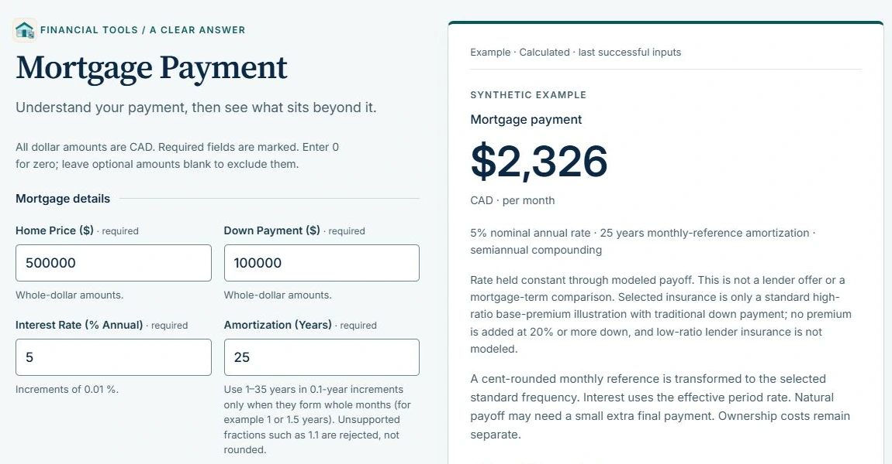
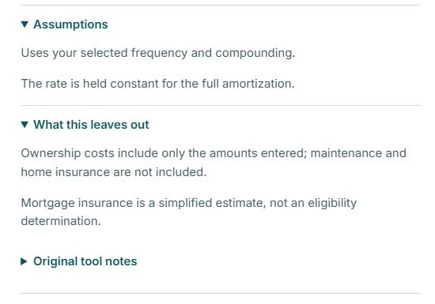

Selected product / FinForFam
FinForFam
Making household tradeoffs easier to explore.
FinForFam brings financial tools and plain-language explanations together for Canadian families. My work spans brand direction, user experience, content, and development—from the first impression to the tools themselves.
My contribution
From the first impression to the tools.
As founder and product lead, I work across brand direction, product strategy, user experience, content architecture, financial modelling, and front-end development.
That includes how FinForFam introduces itself, organizes financial questions, explains concepts, and presents interactive tools. The established implementation uses HTML, CSS, and JavaScript across calculators, dashboards, and scenario tools.
The Mortgage Payment experience below is one concrete example of that wider product work.

The household question
What could this mortgage cost each month?
A mortgage payment is one part of owning a home. The tool estimates that payment from the price, down payment, rate, and amortization, while keeping additional ownership costs and modelling assumptions visible.
The built-in example provides a concrete way to explore the interface without entering personal financial information. It uses a $500,000 home price, $100,000 down payment, 5% annual rate, and 25-year amortization, with monthly payments and semiannual compounding.
- Start with the example. “Use example” fills the scenario and calculates a result. The interface identifies it as synthetic and marks the last successful inputs.
- Read the payment in context. The result shows $2,326 CAD per month, with the rate and amortization directly underneath. A separate ownership-cost total includes the entered tax and utility amounts.
- Inspect the assumptions. Open the disclosures to see how the selected frequency and compounding are used, what stays fixed, and which costs are excluded.
Interface & communication
Keep the result connected to its limits.
The desktop interface places the inputs beside the result. The result names its currency and payment frequency, repeats key assumptions, and identifies the example state. This lets a reader connect the displayed amount to the scenario that produced it.
The assumptions and exclusions are available beneath the result. They explain that the rate remains constant for the modelled amortization and that ownership costs include only the amounts entered. Maintenance and home insurance are excluded; mortgage insurance is described as a simplified estimate.


Current scope
A working example, with a clear boundary.
In the 28 October 2026 browser review, the public tool’s built-in example populated its fields, produced the labelled result, and exposed the assumptions shown here. The two views are authentic captures of that demonstration state.
That observation establishes this interface workflow. It does not independently validate the financial calculations or establish user or commercial outcomes. The tool presents educational estimates; the displayed example is not a lender offer.
Let’s start a conversation
Have a project or
opportunity in mind?
Get in touch about a role, a product, or Sports Performance Platform.